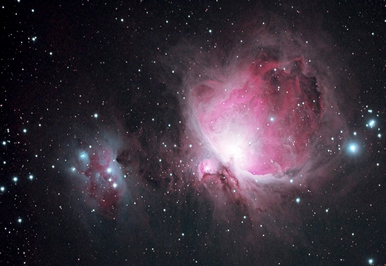
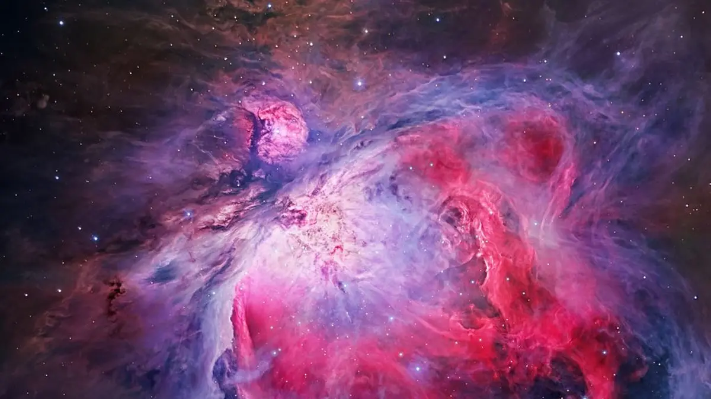
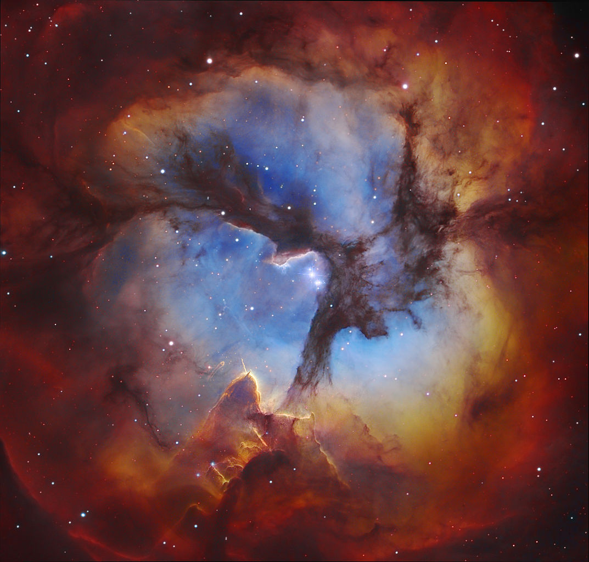
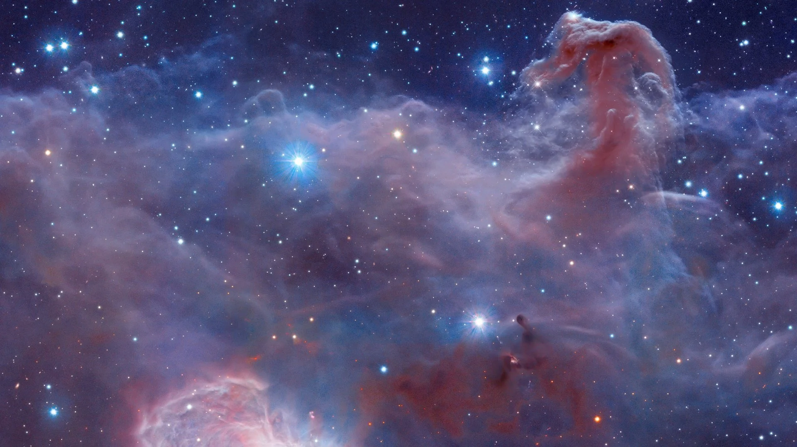
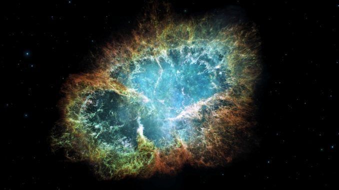

The word "Nebula" is derived from the Latin word for "clouds". Indeed, a nebula is a cosmic cloud of gas and dust floating in space. More than one nebula are called nebulae. A nebula is a giant cloud of dust and gas in space. Some nebulae come from the gas and dust thrown out by the explosion of a dying star, such as a supernova. Other nebulae are regions where new stars are beginning to form. Nebulae are made of dust and gases—mostly hydrogen and helium. The dust and gases in a nebula are very spread out, but gravity can slowly begin to pull together clumps of dust and gas. As these clumps get bigger and bigger, their gravity gets stronger and stronger.
Size: Nebulae are huge interstellar clouds of gas and dust that range in size from 1 AU to 10 AU,
Temperature: The temperature of the gas in the nebula is about 10,000 degrees Celsius, and the central stars of planetary nebulae are among the hottest stars in the Universe, with temperature in the range of 25,000 to over 200,000 degrees Celsius.
Life Cycle Planetary nebulae only last for about 20,000 years, making them a very short-lived part of the stellar life cycle.

Types of nebula:
There are main 5 types of nebula:-
(1) Emission Nebula: Emission Nebulae are those that emit radiation from ionized gas and are often called HII regions because they are largely composed of ionized hydrogen. The Orion Nebula is an emission nebula and star-forming region. Not only is it the brightest nebula in the sky It is the most active star-forming region in our Galaxy, and can easily be observed up-close with a small telescope.

Emission Nebula
(2) Reflection Nebula: A reflection nebula differs from an emission nebula it does not emit radiation of its own. It is a cloud of dust and gas that reflects the light energy from a nearby star or group of stars. Reflection nebulae are frequently the sites of star formation. They usually tend to be blue in color because of the way that the light is scattered. Blue light is scattered more efficiently. The Trifid Nebula (M20) in Sagittarius is a good example of a reflection nebula.

Reflection Nebula
(3) Dark Nebulae: A dark nebula is a cloud of dust that blocks the light from objects behind it. They are very similar to reflection nebulae in composition and look different primarily because of the placement of the light source. Dark nebulae are usually seen together with emission and reflection nebulae. The Horsehead Nebula in Orion is probably the most famous example of a dark nebula. It is a dark region of dust in the shape of a horse's head that blocks the light from a much larger emission nebula behind it.

Dark Nebulae
(4) Planetary Nebula: When early astronomers observed these round, compact nebulae in the night sky - they thought that they must be planets. In reality, planetary nebulae have nothing to do with planets. Planetary nebulae are formed when a star dies, and create dramatic formations of radiating cosmic gas. Some great examples of planetary nebulae in the night sky include the Ring Nebula, the Dumbbell Nebula, and the Helix Nebula.

Planetary Nebula
(5) Supernova Remnants: Supernova remnants are created when a star ends it life in a massive explosion known as a supernova. The explosion blows a large amount of the star's matter out into space. This cloud of matter glows with the remains of the star that created it. One of the best examples of a supernova remnant is the Crab Nebula (M1) in Taurus. It is illuminated by a pulsar which was created by the supernova.

Supernova Remnants